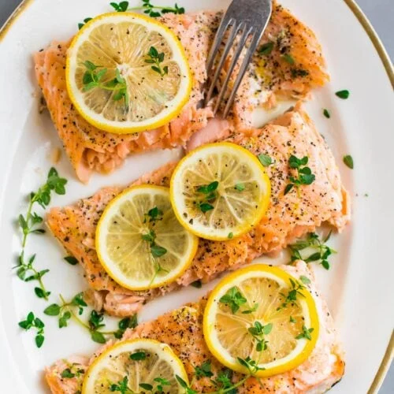

Baked Lemon Garlic Salmon

You'll love this flavor-packed lemon garlic salmon! It is tender, moist, and perfectly flaky.
Aside from the fact that salmon is of the good-for-you Mediterranean diet foods, it is a beautiful, tasty fish that makes a "fancy" dinner in a snap. But many people are intimidated by the idea of cooking a large salmon fillet because it can easily turn out too dry or bland. Not the case here!
Ingredients
- Large side of salmon - 2 pounds
- Lemon - loads of it. Juice of 2 large lemons + lemon zest
- Lost of fresh garlic - minced or finely chopped
- Extra virgon olive oil
- Spices & herbs - a simple trio of dry oregano, paprikaa nd black pepper
Instructions
- Make the lemon-garlic sauce. In a small bowl or jar, mix together the lemon juice, olive oil, garlic, lemon zest and spices.
- Prepare Salmon. Prepare a baking sheet lined with a large piece of foil (foil needs to be large enough to wrap salmon). Brush the top of the foil with extra virgin olive oil. Pat salmon dry and season well with kosher salt, and place on the prepared pan. Now, pour the tasty lemon-garlic sauce all over the salmon evenly. Add lemon slices (because never enough lemon when it comes to salmon)! Wrap the foil over and fold to secure shut at the top.
- Bake salmon (wrapped in foil) in a 375 degrees F heated-oven. Bake for 15 minutes or so, depending on thickness (if your salmon is 1 ½ inches or more in thickness, it may take a little bit longer.) Remove from oven and uncover, then place under the broiler for a couple more minutes. Garnish with a little fresh parsley. How tasty does this look?! I've got some ideas below for what to serve along!